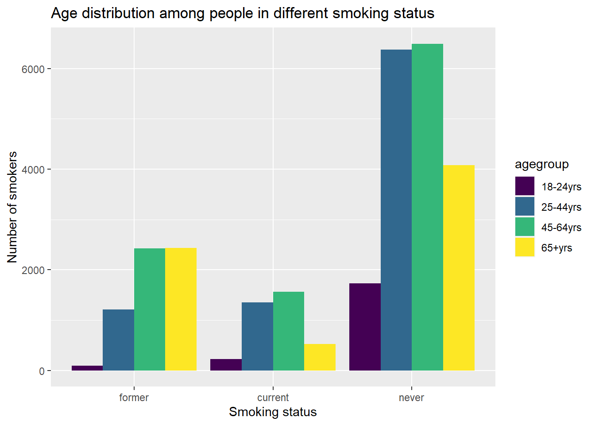
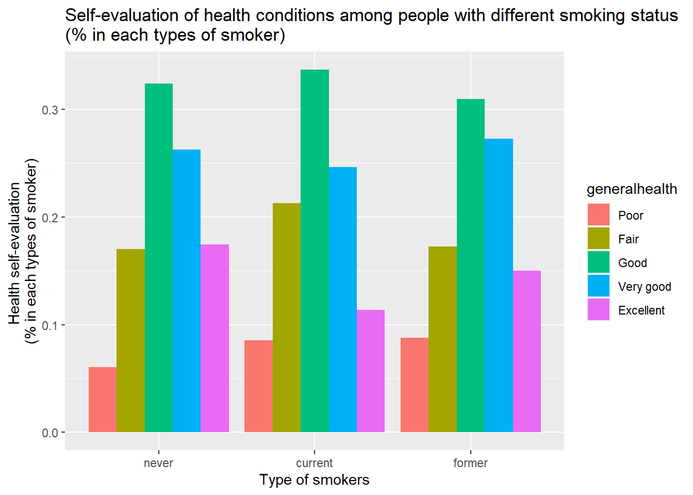
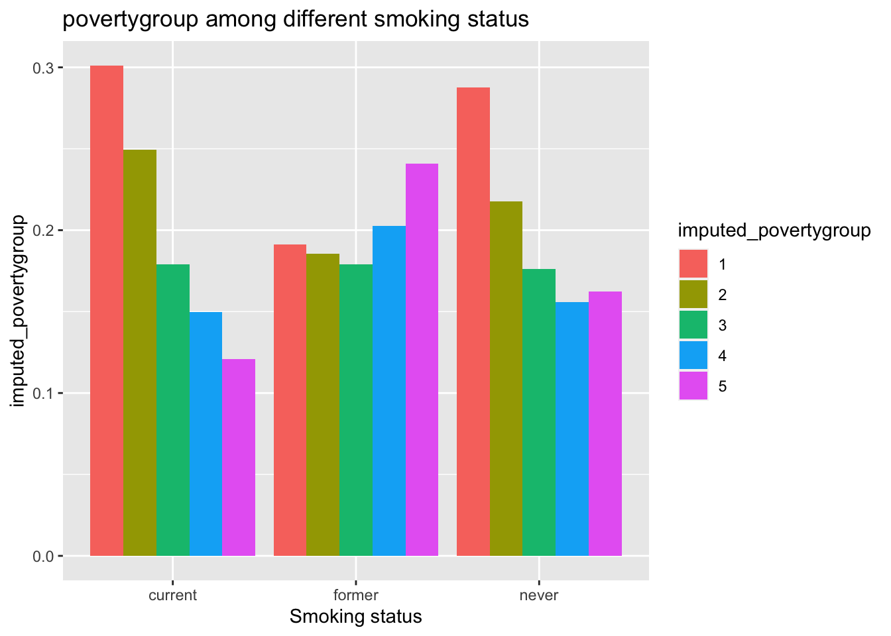
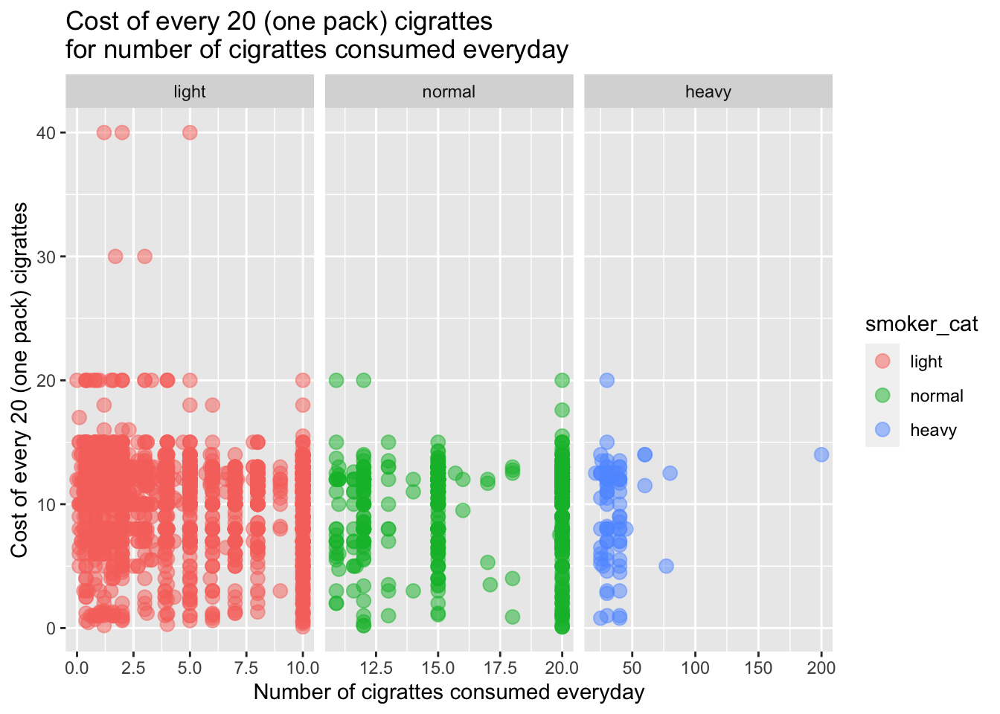

We select year 2014-2016 and variables relating to smoking and insurance.
chs16 = read_sas("data/chs2016_public.sas7bdat")
chs16_filter = chs16 %>%
select(agegroup,generalhealth,insuredgateway16,insure16,insured,insure5,sickadvice16,sickplace,didntgetcare16,smoker,everyday,numberperdaya,cost20cigarettes,imputed_povertygroup,fluvaccineshot,bmi,child) %>%
mutate(year = 2016) %>%
rename(insuredgateway = insuredgateway16, insure = insure16,sickadvice = sickadvice16,didntgetcare = didntgetcare16)
chs15 = read_sas("data/chs2015_public.sas7bdat")
chs15_filter = chs15 %>%
select(agegroup,generalhealth,insuredgateway15,insure15,insured,insure5,sickadvice15,sickplace,didntgetcare15,smoker,everyday,numberperdaya,cost20cigarettes,imputed_povertygroup,fluvaccineshot,bmi,child) %>%
mutate(year = 2015) %>%
rename(insuredgateway = insuredgateway15, insure = insure15,sickadvice = sickadvice15,didntgetcare = didntgetcare15)
chs14 = read_sas("data/chs2014_public.sas7bdat")
chs14_filter = chs14 %>%
select(agegroup,generalhealth,insuredgateway14,insure14,insured,insure5,sickadvice14,sickplace,didntgetcare14,smoker,everyday,numberperdaya,cost20cigarettes,imputed_povertygroup,fluvaccineshot,bmi,child) %>%
mutate(year = 2014) %>%
rename(insuredgateway = insuredgateway14, insure = insure14,sickadvice = sickadvice14,didntgetcare = didntgetcare14)
chs_14_16 = bind_rows(chs14_filter,chs15_filter,chs16_filter)dataset_basic = chs_14_16 %>%
select(agegroup,insuredgateway,insure,sickadvice,sickadvice,didntgetcare,smoker,everyday,numberperdaya,cost20cigarettes,generalhealth,fluvaccineshot,imputed_povertygroup,bmi,child) %>%
mutate(numberperdaya = round(numberperdaya,1))smoke_df = dataset_basic %>%
select(agegroup,smoker,everyday,numberperdaya,cost20cigarettes,generalhealth,fluvaccineshot,imputed_povertygroup,bmi,child) %>%
drop_na(smoker) %>%
mutate(smoker = factor(smoker,levels = c(1,2,3),labels = c("never","current","former")),
everyday = factor(everyday),
agegroup = factor(agegroup,ordered = TRUE,labels = c("18-24yrs","25-44yrs", "45-64yrs", "65+yrs")),
smoker_cat = case_when(
numberperdaya <= 10 ~ 1,
(numberperdaya > 10) & (numberperdaya <= 20) ~2,
numberperdaya > 20 ~ 3),
smoker_cat = factor(smoker_cat,levels = c(1,2,3),labels = c("light","normal","heavy")),
generalhealth = factor(generalhealth,levels = c(5,4,3,2,1), labels = c("Poor","Fair","Good","Very good","Excellent")),
fluvaccineshot = factor(fluvaccineshot, levels = c(1,2), labels = c("yes","no")),
imputed_povertygroup = factor(imputed_povertygroup)
)
skimr::skim(smoke_df)| Name | smoke_df |
| Number of rows | 28573 |
| Number of columns | 11 |
| _______________________ | |
| Column type frequency: | |
| factor | 7 |
| numeric | 4 |
| ________________________ | |
| Group variables | None |
Variable type: factor
| skim_variable | n_missing | complete_rate | ordered | n_unique | top_counts |
|---|---|---|---|---|---|
| agegroup | 61 | 1.00 | TRUE | 4 | 45-: 10479, 25-: 8940, 65+: 7040, 18-: 2053 |
| smoker | 0 | 1.00 | FALSE | 3 | nev: 18729, for: 6188, cur: 3656 |
| everyday | 24917 | 0.13 | FALSE | 2 | 1: 2251, 2: 1405 |
| generalhealth | 212 | 0.99 | FALSE | 5 | Goo: 9219, Ver: 7505, Fai: 5037, Exc: 4614 |
| fluvaccineshot | 160 | 0.99 | FALSE | 2 | no: 14824, yes: 13589 |
| imputed_povertygroup | 0 | 1.00 | FALSE | 5 | 1: 7675, 2: 6135, 3: 5063, 5: 4976 |
| smoker_cat | 24917 | 0.13 | FALSE | 3 | lig: 2853, nor: 708, hea: 95 |
Variable type: numeric
| skim_variable | n_missing | complete_rate | mean | sd | p0 | p25 | p50 | p75 | p100 | hist |
|---|---|---|---|---|---|---|---|---|---|---|
| numberperdaya | 24917 | 0.13 | 7.70 | 8.33 | 0.00 | 1.60 | 5.00 | 10.00 | 200.00 | ▇▁▁▁▁ |
| cost20cigarettes | 25517 | 0.11 | 10.29 | 3.45 | 0.10 | 8.00 | 11.00 | 12.50 | 40.00 | ▃▇▁▁▁ |
| bmi | 1343 | 0.95 | 27.16 | 6.10 | 3.75 | 23.11 | 26.31 | 29.99 | 99.16 | ▂▇▁▁▁ |
| child | 106 | 1.00 | 1.64 | 0.48 | 1.00 | 1.00 | 2.00 | 2.00 | 2.00 | ▅▁▁▁▇ |
smoke_df %>%
drop_na(agegroup) %>%
group_by(agegroup,smoker) %>%
summarize(
count = n(),
) %>%
mutate(smoker = fct_reorder(smoker,count)) %>%
ggplot(aes(x = smoker, y = count, fill = agegroup)) +
geom_bar(stat = "identity",position = "dodge") +
labs(
x = 'Smoking status',
y = 'Number of smokers',
title = 'Age distribution among people with different smoking status')## `summarise()` has grouped output by 'agegroup'. You can override using the `.groups` argument.
smokegroup_count = smoke_df %>%
drop_na(smoker) %>%
group_by(smoker) %>%
summarize(
smokegroup_count = n()) %>%
pull()
smoke_df %>%
drop_na(generalhealth) %>%
group_by(generalhealth,smoker) %>%
summarize(
count = n())%>%
mutate(smokegroup_count = smokegroup_count,
health_percent = count/smokegroup_count)%>%
ggplot(aes(x = smoker, y = health_percent, fill = generalhealth)) +
geom_bar(stat = "identity",position = "dodge") +
labs(
x = 'Type of smokers',
y = 'Health self-evaluation \n(% in each types of smoker)',
title = 'Self-evaluation of health conditions among different types of smokers\n(% in each types of smoker)')## `summarise()` has grouped output by 'generalhealth'. You can override using the `.groups` argument.
smoke_df %>%
drop_na(imputed_povertygroup) %>%
group_by(imputed_povertygroup,smoker) %>%
summarize(
count = n(),
) %>%
mutate(
smokegroup_count = smokegroup_count,
poverty_percent = count/smokegroup_count,
smoker = fct_reorder(smoker,count)) %>%
ggplot(aes(x = smoker, y = poverty_percent, fill = imputed_povertygroup)) +
geom_bar(stat = "identity",position = "dodge") +
labs(
x = 'Smoking status',
y = 'imputed_povertygroup',
title = 'povertygroup among different smoking status')## `summarise()` has grouped output by 'imputed_povertygroup'. You can override using the `.groups` argument.
For never and former smokers, no data for variables everyday, numberperdaya, cost20cigarettes, so next we focus on the current smokers.
current_smoker = smoke_df %>% filter(smoker == "current")
current_smoker %>%
ggplot(aes(x = smoker_cat, y = cost20cigarettes, fill = smoker_cat))+
geom_violin() +
labs(
x = 'Type of smokers',
y = 'Cost of every 20 (one pack) cigrattes',
title = 'Cost of every 20 (one pack) cigrattes\namong different type of smokers')## Warning: Removed 600 rows containing non-finite values (stat_ydensity).current_smoker %>%
ggplot(aes(x = numberperdaya, y = cost20cigarettes,color = smoker_cat))+
geom_point(alpha = .5,size = 3) +
facet_grid(.~smoker_cat,scales = "free") +
labs(
x = 'Number of cigrattes consumed everyday',
y = 'Cost of every 20 (one pack) cigrattes',
title = 'Cost of every 20 (one pack) cigrattes\nfor number of cigrattes consumed everyday')## Warning: Removed 600 rows containing missing values (geom_point).
Chi-squared test for insure and 1. Flu
analyse_flu_insurancetype =
dataset_basic %>%
drop_na(fluvaccineshot,insure) %>%
mutate(fluvaccineshot = factor(fluvaccineshot,levels = c(1,2),labels = c("Yes","No"))) %>%
mutate(insure = factor(insure,levels = c(1,2,3,4,5,6,7),labels = c("Employer","Self-purchase","Medicare", "Medicaid/Family Health+", "Milit/CHAMPUS/Tricare", "COBRA/Other", "Uninsured"))) %>%
group_by(fluvaccineshot,insure) %>%
summarize(n = n())## `summarise()` has grouped output by 'fluvaccineshot'. You can override using the `.groups` argument.test_data_flu_insurance = analyse_flu_insurancetype %>%
pivot_wider(
names_from = "insure",
values_from = "n")chisq.test(test_data_flu_insurance[-1])##
## Pearson's Chi-squared test
##
## data: test_data_flu_insurance[-1]
## X-squared = 1170.3, df = 6, p-value < 2.2e-16analyse_poverty_insurancetype =
dataset_basic %>%
drop_na(imputed_povertygroup,insure) %>%
mutate(imputed_povertygroup = factor(imputed_povertygroup,levels = c(1,2,3,4,5))) %>%
mutate(insure = factor(insure,levels = c(1,2,3,4,5,6,7),labels = c("Employer","Self-purchase","Medicare", "Medicaid/Family Health+", "Milit/CHAMPUS/Tricare", "COBRA/Other", "Uninsured"))) %>%
group_by(imputed_povertygroup,insure) %>%
summarize(n = n())## `summarise()` has grouped output by 'imputed_povertygroup'. You can override using the `.groups` argument.test_data_poverty_insurance = analyse_poverty_insurancetype %>%
pivot_wider(
names_from = "insure",
values_from = "n")chisq.test(test_data_poverty_insurance[-1])##
## Pearson's Chi-squared test
##
## data: test_data_poverty_insurance[-1]
## X-squared = 9907.9, df = 24, p-value < 2.2e-16